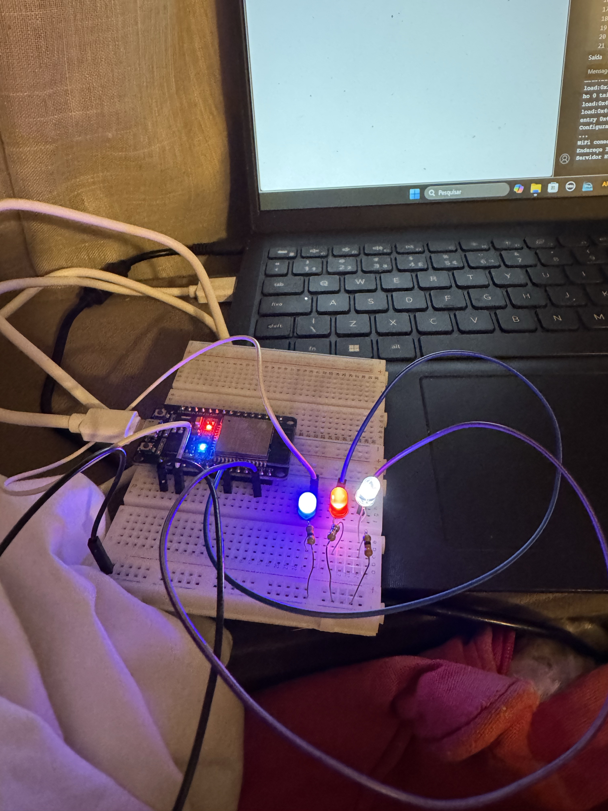
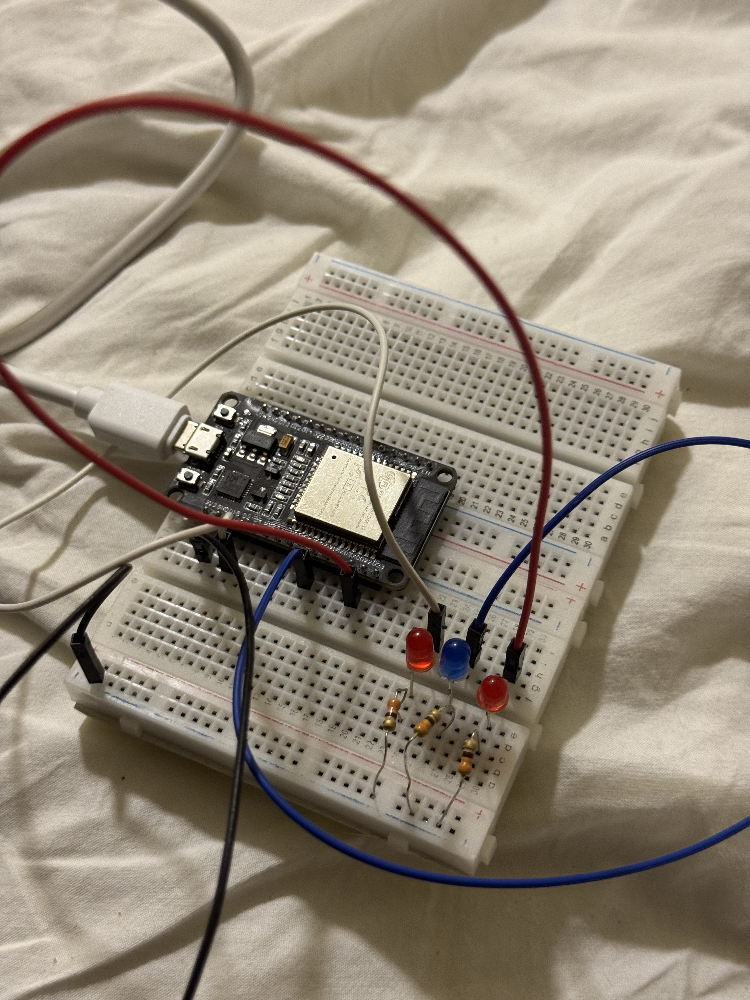
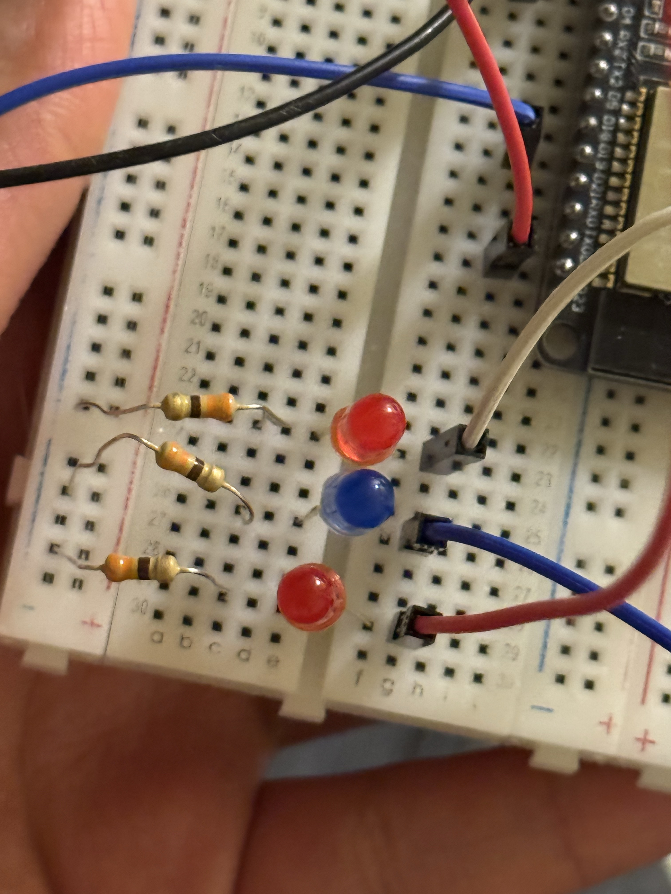

Sala
Controle da iluminação do ambiente social.

[ADICIONAR FOTO DA LUZ DA SALA]
Controle de luzes e organização da iluminação nos ambientes da Casa Inteligente.
A iluminação é uma das aplicações mais comuns da automação residencial. Com um sistema de controle, diferentes luzes podem ser acionadas de acordo com os comandos do usuário ou com condições definidas na programação.
Em nossa maquete, a proposta é organizar o controle das luzes por ambiente, permitindo identificar cada ponto de iluminação e demonstrar como o acionamento eletrônico pode ser integrado à interface do site.



Separar a iluminação por cômodo facilita a organização do sistema e a identificação de cada dispositivo. No painel principal, os ambientes poderão ser apresentados individualmente, de acordo com as ligações realmente realizadas na maquete.
Controle da iluminação do ambiente social.
[ADICIONAR FOTO DA LUZ DA SALA]
Acionamento independente da luz da cozinha.

[ADICIONAR FOTO DA LUZ DA COZINHA]
Organização e controle do ponto de iluminação.

[ADICIONAR FOTO DA LUZ DO QUARTO]
O usuário solicita o acionamento por meio de um botão, uma interface ou outro mecanismo previsto no projeto.
A placa controladora recebe o comando e executa a lógica programada.
A saída de controle aciona o circuito adequado para ligar ou desligar a iluminação.
A luz muda de estado conforme o circuito e o comando executado.
A demonstração poderá mostrar o acionamento das luzes, a identificação de cada cômodo e a resposta da maquete.
A iluminação da casa foi desenvolvida com os senguintes materiais, ESP32, protoboard, fios coloridos, led, resistor e cabo USB.Para essa iluminação funcionar, foi necessário criar um codigo para que pudesse funcionar o protótipo, e depois por no aplicativo arduino IDE. O aplicativo gerava IP, e jogando o IP no navegador, era possivel rodar o sistema das LEDs ou seja, poderias ligar e desligar qualquer led na casa, ou até deixando todas ligadas
Esta seção será utilizada para documentar o programa que controla as luzes, explicando as saídas utilizadas, os comandos e a lógica de acionamento.
#include
#include
const char* ssid = "LIVE TIM_9840_MH";
const char* password = "8765432a";
WebServer server(80);
// Pinos dos 3 LEDs
const int led1 = 2; // D2
const int led2 = 19; // D4
const int led3 = 22; // D5
void setup() {
Serial.begin(115200);
pinMode(led1, OUTPUT);
pinMode(led2, OUTPUT);
pinMode(led3, OUTPUT);
digitalWrite(led1, LOW);
digitalWrite(led2, LOW);
digitalWrite(led3, LOW);
Serial.println("Configurando WiFi no modo estação");
WiFi.mode(WIFI_STA);
WiFi.begin(ssid, password);
while (WiFi.status() != WL_CONNECTED) {
delay(500);
Serial.print(".");
}
Serial.println("\nWiFi conectado!!!");
Serial.print("Endereço IP: ");
Serial.println(WiFi.localIP());
server.on("/", HTTP_GET, handleRoot);
server.onNotFound(handleNotFound);
server.begin();
Serial.println("Servidor HTTP iniciado");
}
void loop() {
server.handleClient();
}
void handleRoot() {
String html =
"
Controle de LEDs
"
""
""
""
""
""
"";
server.send(200, "text/html", html);
}
void handleNotFound() {
String comando = server.uri();
if (comando == "/acender1") {
digitalWrite(led1, HIGH);
server.send(200, "text/plain", "LED 1 aceso");
} else if (comando == "/apagar1") {
digitalWrite(led1, LOW);
server.send(200, "text/plain", "LED 1 apagado");
} else if (comando == "/acender2") {
digitalWrite(led2, HIGH);
server.send(200, "text/plain", "LED 2 aceso");
} else if (comando == "/apagar2") {
digitalWrite(led2, LOW);
server.send(200, "text/plain", "LED 2 apagado");
} else if (comando == "/acender3") {
digitalWrite(led3, HIGH);
server.send(200, "text/plain", "LED 3 aceso");
} else if (comando == "/apagar3") {
digitalWrite(led3, LOW);
server.send(200, "text/plain", "LED 3 apagado");
} else {
server.send(404, "text/plain", "Comando não reconhecido");
}
}
A automação da iluminação pode ajudar a evitar que luzes permaneçam acesas sem necessidade, desde que o sistema seja configurado para esse objetivo. O consumo também depende da potência das lâmpadas, do tempo de utilização e das condições de funcionamento.